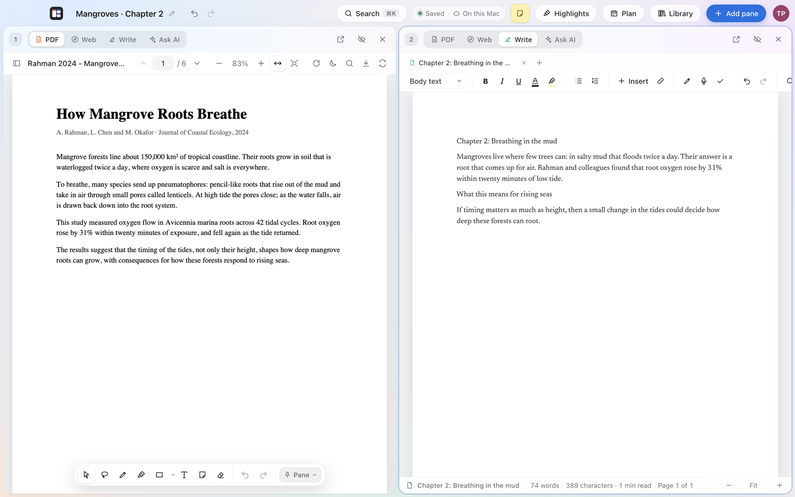
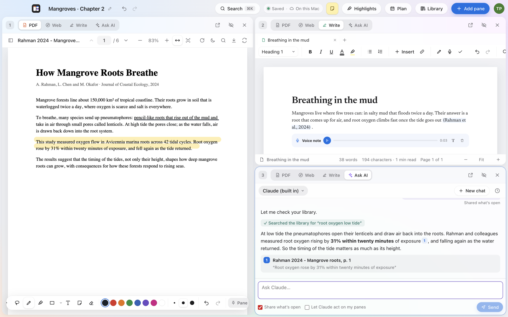
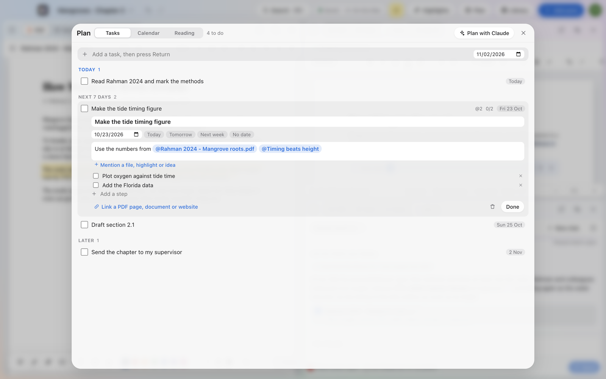

Free public beta · Mac and Windows
Your research desk,
side by side.
SoCubes puts your PDFs, websites, notes and Claude next to each other on one screen. Mark up the paper you’re reading, write with real citations, and keep every deadline in view.
Mac: macOS 14 Sonoma or later, Apple chip or Intel · Windows: 10 or 11, 64-bit (new) · Free during the beta


Made for research
Read, write and think in one place
Keep the paper open while you write about it. Highlight what matters, cite it with one keystroke, and ask Claude, which answers from your own PDFs and shows the page it found it on.
- Up to ten panes: PDFs, websites, documents and AI
- Marks, comments and voice notes on your PDFs
- Citations and a bibliography that build themselves
- A plan for every deadline, and ⌘K to find anything

Your desk follows you
Sign in on your other computers, Mac or Windows, and your projects, PDFs, marks and notes are there, backed up to your account. It all works offline too, and catches up when you’re back.
Private where it matters
Lock a project with Touch ID, a passcode or an authenticator app. Claude chats, browsing history and website logins never leave your computer.
How to install
On a Mac
-
Download
Click Download for Mac and open SoCubes.dmg from your Downloads, then drag SoCubes onto the Applications folder.
-
Open it the first time
During the beta, SoCubes isn’t verified by Apple yet, so the first time macOS says it can’t check it. Click Done, then open System Settings › Privacy & Security, scroll down and click Open Anyway next to SoCubes. You only do this once.
-
Make your account
Sign up with your email. We send a code to confirm it, and you’re in. Your first project is one name away.
On Windows
-
Download
Click Download for Windows and open SoCubes-Setup.exe from your Downloads.
-
Run it the first time
During the beta, Windows may say “Windows protected your PC”. Click More info, then Run anyway. SoCubes installs itself and opens; you’ll find it in the Start menu.
-
Make your account
Sign up with your email, or log in with the account you use on your Mac: your projects appear on both.
Questions
Is it free?
Yes, completely free while SoCubes is in beta.
Why does macOS warn me when I open it?
Apple checks apps that aren’t from the App Store. SoCubes is going through that check now; until it’s done, macOS asks you to confirm once (step 3 above). Updates after that will open without the warning.
How does Claude work in SoCubes?
You add your own key from Anthropic in Settings. It’s locked in your computer’s own secure storage, and your questions go from your computer straight to Anthropic. You can also sign in to ChatGPT, Gemini, Perplexity, Grok or Copilot right inside a pane.
Where are my files kept?
On your computer first, and backed up to your SoCubes account so they appear on your other computers. Only you can see them. Read the privacy page for the details.
Does SoCubes work on Windows?
Yes, as a new beta for Windows 10 and 11. It’s the same app with the same account, so a project made on your Mac opens on your PC. A few Mac extras aren’t on Windows yet: the desktop widget, Touch ID, and writing out voice notes as words (the recordings still save and play).
Will there be an iPad or a web version?
Yes, they’re on the way, with the same account, so your desk follows you there too.
How do I get updates?
SoCubes tells you when a new version is out. Click Download, then drag it to Applications again; your projects stay just as they are.
Something isn’t working. Where do I tell you?
Write to us on the contact page. Say what you did and what happened; we read every message.